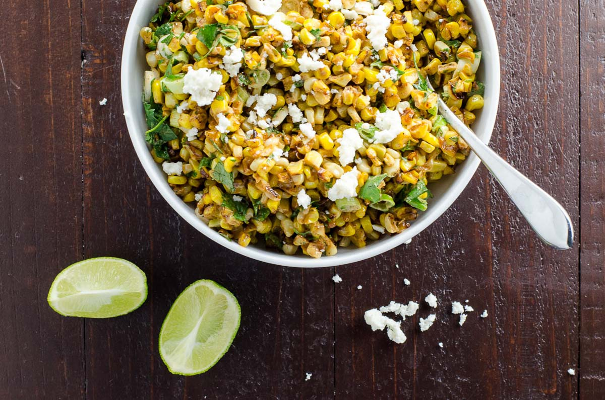

Esquite Mac and Cheese

Description
Esquite - also known as mexican street corn. Not to be mistaken with Elote which is while the corn is still on the cob. This is a meld of sweet, spicy and savory. Elevated by the pasta cheese and lime juice.
Ingredients
- 1 can of corn
- Lime juice
- chili powder
- paprika
- cheese
- pasta
- onions
- jalapenos
Steps
- Get salty water boiling for pasta than add it
- While thats cooking sautee your onions
- add corn to onions with spices
- add lime juice and cream to onions and corn
- now add your cheese to this and take it off head
- once your sauce is made you add the pasta